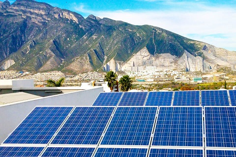

Energia Solar 
La energía solar es aquella que obtenemos del sol. A través de placas solares se absorbe la radiación solar y se transforma en electricidad que puede ser almacenada o volcada a la red eléctrica. También existe la energía solar termoeléctrica, que es aquella que utiliza la radiación solar para calentar un fluido (que puede ser agua), hasta que genere vapor, y accione una turbina que genera electricidad. Puedes ampliar la información sobre energía solar en este post.